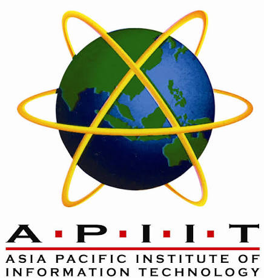

ASIA PACIFIC INSTITUTE OF INFORMATION TECHNOLOGY (APIIT)
(SRI LANKA'S PREMIER PRIVATE HIGHER EDUCATION INSTITUTE FOR IT, BUSINESS & LAW)

HISTORY OF APIIT (PRIVATE INSTITUTE)
- 1999: Established as a leading private higher education institution in Sri Lanka in partnership with Staffordshire University, UK.
- 2000s: Introduced British degree programs in Computing and Business, pioneering quality private tertiary education in Sri Lanka.
- 2009: Expanded degree pathways by launching Sri Lanka's first internal British Law degree program (Private Law School).
- Present: Operates as a premier private higher education institute with modern campuses in Colombo and Kandy.
AVAILABLE FACULTIES (PRIVATE DEGREE PROGRAMS)
- School of Computing – පරිගණක විද්යා අධ්යයනාංශය
- School of Business – ව්යාපාර අධ්යයනාංශය
- School of Law – නීති අධ්යයනාංශය
- Postgraduate Studies Division – පශ්චාත් උපාධි අධ්යයනාංශය
GO TO OFFICIAL WEBSITE OF APIIT (PRIVATE)
GO TO HOME PAGE